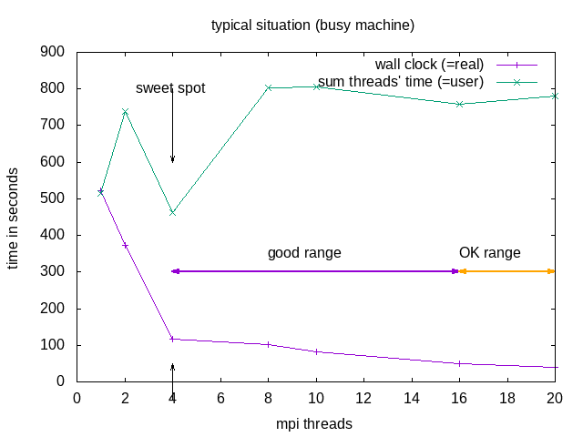
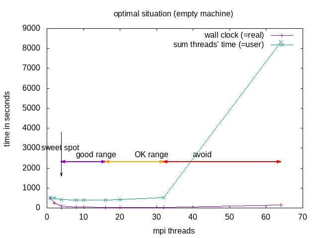

OpenFOAM
Quick-start: Example use of OpenFOAM on BASE cluster
For the example we will use one of the tutorial cases.
Load environment:
module load rocky8-spack module load openfoam
First time users need to create their
$WM_PROJECT_USER_DIR:export WM_PROJECT_USER_DIR=$HOME/OpenFOAM/$USER-$WM_PROJECT_VERSION mkdir $WM_PROJECT_USER_DIR --parent
Copy the damBreak tutorial case into the
$WM_PROJECT_USER_DIRand go into the folder damBreak:cp -r $FOAM_TUTORIALS/multiphase/interFoam/laminar/damBreak/damBreak $WM_PROJECT_USER_DIR/ cd $WM_PROJECT_USER_DIR/damBreak pwd
Now we can run the OpenFOAM case step-by-step or as a batch job.
srun --partition=common -t 2:10:00 -−pty bash blockMesh setFields interFoam
NB: Do not use the Allrun script(s) of the tutorials, as these may try to launch parallel jobs without requesting resources.
Visualize the results (create
case.foamfile to load in ParaView):touch case.foam paraview
Open
case.foamin ParaView.
Interactive single process
For a non-parallel run of the tutorial case, the decomposeParDict needs to be removed from system directory:
mv system/decomposeParDict system/decomposeParDict-save
Running the damBreak case step-by-step interactively:
module load rocky8-spack
module load openfoam
srun --partition=common -t 2:10:00 -−pty bash
blockMesh
setFields
interFoam
Batch-job (non-interactive) parallel job
Alternatively, we can run the job in parallel as a batch job
(if you removed/renamed the decomposeParDict before, copy it back by command):
cp system/decomposeParDict-save system/decomposeParDict
The openfoam.slurm script:
#!/bin/bash -l
#SBATCH -n 4
#SBATCH -t 00:10:00
#SBATCH -J openfoam-damBreak
#SBATCH --partition=green-ib
#the following 2 lines are only needed if not done manually in command-line
#before submitting the job
module load rocky8-spack
module load openfoam
blockMesh
decomposePar
setFields
srun interFoam -parallel
reconstructPar
Pre-processing (geometry and mesh generation)
The geometry and mesh can be either hand-coded using blockMesh or with Gmsh, FreeCAD or Salome. When using Gmsh, be sure to save the mesh in v2 ASCII format (see separate page on CAD-mesh. This creates a volume mesh.
To convert a Gmsh volume .msh file for OpenFOAM, use
gmshToFoam meshfile.msh
Another possibility is to use CAD for a surface mesh and use the snappyHexMesh utility to adapt a blockMesh volume mesh to the surface (see OpenFOAM motorcycle tutorial).
Visualizing the results (post-processing)
Login to viz (manual can be found here).
Change to the case directory.
Create an empty
.foamfile for the case:touch damBreak.foam
then use the regular ParaView:
paraviewOpen the
.foamfile from the menu.
Comparison of the execution time
It is educational to check the runtime of the code using the time command, e.g. for the single-thread
time interFoam
and for the parallel run (in the openfoam.slurm script)
time mpirun -n $SLURM_NTASKS interFoam -parallel
As the damBreak case is quite small, it is likely that the parallel run is not faster than the sequential, due to the communication overhead.
In a testrun, the resuls have been as follows:
| time type | sequential | parallel |
|---|---|---|
| real | 0m8.319s | 0m39.463s |
| user | 0m6.927s | 1m1.755s |
| sys | 0m0.432s | 0m2.922s |
Lesson to be learned: Parallel computation is only useful for sufficiently large jobs.
NOTE: Parallel does not (necessarily) mean faster!!! Parallel execution introduces overhead (starting threads, communication)! For optimal execution time and optimal use of resources one needs to test and find the sweet spot.

The division into the areas is a combined decision taking into account “real” (wall clock) and “user” (summed time of all threads) time (from the time command). “Wall clock” (real) time is the time one needs to wait till the job is finished, “Summed thread time” (user) is the sum of the times that all individual threads needed, it should be roughly user = numtreads x real. For parallel programs, one can expect that “user” time of the parallel run is larger than for the sequential, due to communication overhead, if it is smaller, that probably means the individual threads could make better use of cache.
| area | why | explanation |
|---|---|---|
| sweet spot | minimal "user" time | = minimal heat production, optimal use of resources |
| good range | linear speedup for "real", with constant or slightly increasing "user" | |
| OK range | slightly less than linear speedup for "real", and slightly increasing "user" | |
| avoid | ascending slope in the diagram for "real" and "user" | one actually needs to wait longer compared to the case with fewer cores |
Recommended in this case would be to request 8 threads -n 8 --ntasks-per-node 8 but use mpirun -n 4. OpenFOAM does not seem to benefit from hyperthreading.
Some errors and how to solve them
“slurmstepd: error: Detected 1oom-kill event(s) in “: this is a SLURM out-of-memory error: solve by increasing the memory request
--mem=xxGBwhere xx is something larger than beforea “Bus error” means the software tries to access non-existing memory, this is actually a SLURM out-of-memory error: solve by increasing the memory request
--mem=xxGBwhere xx is something larger than beforeinfiniband error: wrong partition, the nodelist contains non-infiniband nodes; or wrong openmpi module